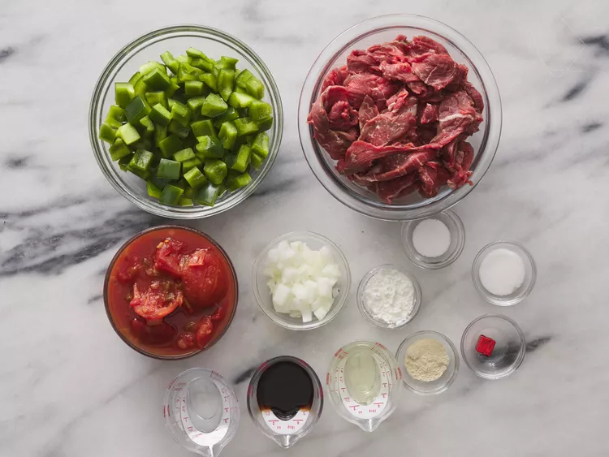

Slow-Cooker Pepper Steak

Description
This crockpot pepper steak recipe is very tender and flavorful and is one
of our family's favorites. It's great to make ahead of time in the slow
cooker and then serve over rice, egg noodles, or chow mein.
Ingredients
- 2 pounds beef sirloin, cut into 2 inch strips
- 3/4 teaspoon garlic powder, or to taste
- 3 tablespoons vegetable oil
- 1 cube beef bouillon
- 1/4 cup hot water
- 1 tablespoon cornstarch
- 1/2 cup chopped onion
- 2 large green bell peppers, roughly chopped
- 1 (14.5 ounce) can stewed tomatoes, with liquid
- 3 tablespoons soy sauce
- 1 teaspoon white sugar
- 1 teaspoon salt
Directions
- Gather all ingredients.

-
Sprinkle beef sirloin strips with garlic powder. Heat vegetable oil in a
large skillet over medium heat and sear beef strips, about 5 minutes per
side. Transfer to a slow cooker.

-
Mix bouillon cube with hot water in a separate container until
dissolved, then mix in cornstarch until dissolved.

-
Pour into the slow cooker with beef strips. Stir in onion, green
peppers, stewed tomatoes, soy sauce, sugar, and salt.

-
Cover, and cook on High for 3 to 4 hours, or on Low for 6 to 8 hours.